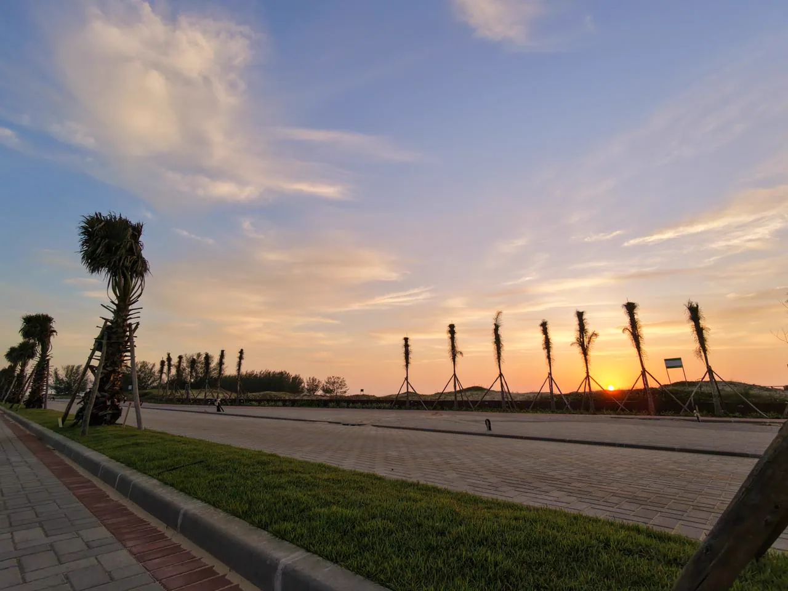

Quem somos
Transformando possibilidades em realidade.
A Monlote atua com engenharia e urbanização, conectando planejamento e execução desde a leitura do terreno até as vias e espaços que dão forma ao empreendimento.
Conheça a empresa ↗Execução que gera valor
Infraestrutura pensada para ir mais longe.
Solo, vias, drenagem e urbanização trabalham juntos para formar espaços funcionais, duráveis e preparados para crescer.
Explore nossa atuação ↗